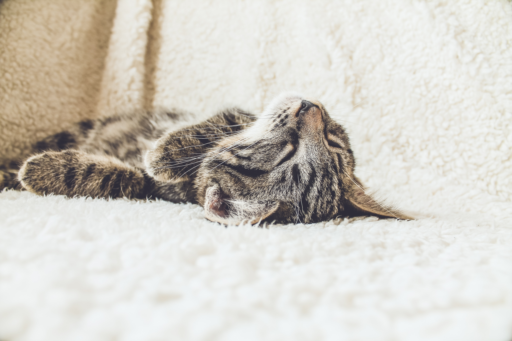
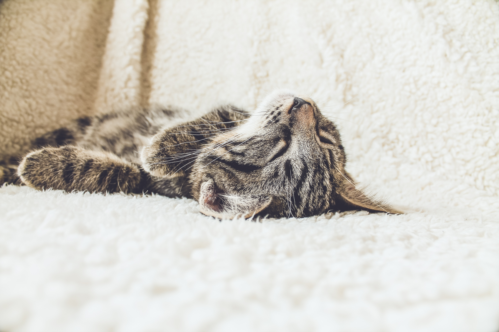

Aujourd’hui je souhaite écrire sur une espèce animalière qui arrive à remplir le manque d’une véritable personne et qui nous procure des bienfaits que beaucoup d’entre nous ignore.. Oui je parle bien de cette petite boule de poil qui remplie nos moments de solitude en moments de bonheur.
Tout d’abord, le chat possède une relation particulière avec l’être humain. On dit souvent qu’il est indépendant. Mais le chat est pourtant capable de donner une âme à notre maison et la rendra bien plus vivante qu’elle ne l’est déjà actuellement. Le chat, un thérapeute au poil Les soirs où je rentre stressée, sans aucune envie de communiquer avec des humains, je prends mon chat sur mes genoux et je lui raconte mes soucis. Blotti contre moi, il me laisse parler sans me contredire, et son ronronnement régulier m’apaise. Quand je n’ai plus rien à dire, je me contente de le caresser en silence. Progressivement, j’accède à une sorte de « béatitude » inégalable 155.
En effet, plusieurs études récentes montrent que les gens qui vivent avec un chat jouissent d’une meilleure santé psychologique que ceux qui vivent sans. Tous les propriétaires constatent, jour après jour, le pouvoir de leur compagnon griffu, sans pour autant pouvoir l’expliquer. D’ailleurs, en 1982, Aaron Katcher, un psychiatre américain, prouve en direct, à la télévision que caresser un chat diminue l’anxiété, la tension artérielle, donc le risque d’infarctus. Lorsqu'on regarde les chats qui jouent, on remarque qu'ils aiment nous faire rire, et qu'ils continuent les activités qui attirent notre attention. Rire, c'est un bon exercice pour les poumons, améliore la digestion et renforce le système immunitaire. Le ronronnement du chat émet des vibrations sonores apaisantes et bienfaisantes agissant un peu comme "un médicament sans effet secondaire ».
Alors la prochaine fois que vous faites des câlins à votre chat sur le canapé, en jetant la balle en caoutchouc sà travers le salon pour la dixième fois, n'oubliez pas que votre chat pourrait faire bien plus pour vous que vous ne le pensez !
 
